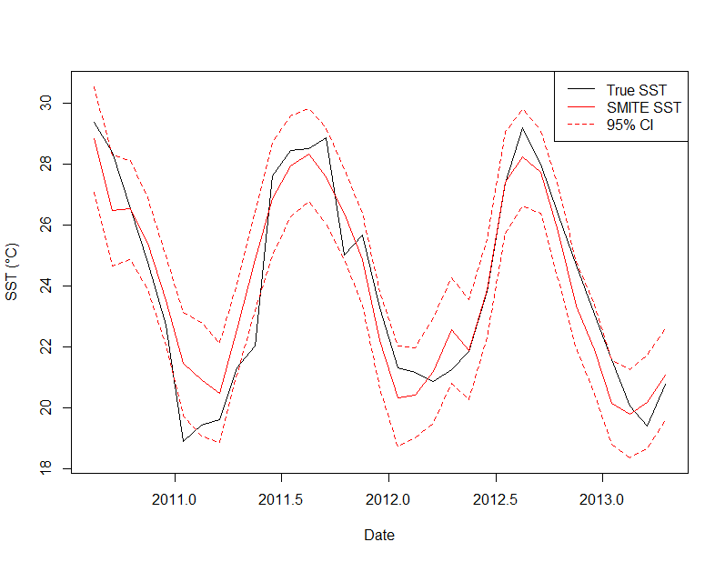

Introduction
The goal of SMITER is to allow for easy access of the SMITE Method, a multivariate method for reconstructing sea surface temperature (SST) and seawater pH using coral skeletal geochemistry. You can find more details about the SMITE method in the forthcoming paper (Hughes et al., in press). In a sentence, SMITE leverages the covariance of multiple coral geochemical signals (e.g., Sr/Ca, Li/Mg) to optimize reconstruction skill. While SMITE is ready for widespread dissemination, it is also in active development. See guidelines below for contributing.
Installation
You can install the development version of SMITER from GitHub with:
install.packages("devtools")
devtools::install_github("hphughescraft/SMITER")Usage
The SMITER package comes with two primary functions: SMITE.calib() and SMITE.recon(). A typical workflow will go as follows.
Calibration
First, you want to call the SMITER package and load your data into R. The SMITER package comes with sample data from Hughes et al. (in press) for you to work with.
# Call the SMITER package
library(SMITER)
# Load data (e.g., sample data from the SMITER package)
data(BMDA_1B_Comp) # Data
data(BMDA_1B_EComp) # ErrorsNext, you will want to designate a forward matrix (A), a reconstruction target (b), and the corresponding errors in both (Ae, be).
proxy_names <- c('BCa', 'SrCa', 'MgCa', 'UCa', 'LiCa', 'LiMg', 'd11B')
A <- bmda_1b_comp[,proxy_names]
Ae <- bmda_1b_ecomp[,proxy_names]
b <- bmda_1b_comp[,'Temp']
be <- rep(0.02, length(b))Now you can execute a SMITE calibration.
SMITE <- SMITE.calib(A = A, b = b, Ae = Ae, be = be, eigenclean = ncol(A))Here is a quick plot to compare the SMITE SST reconstruction to true SST using this chunk of code.
Date <- bmda_1b_comp$Date
# Base plot #
plot(x = Date, y = b, type = 'l', ylab = 'SST (\u00B0C)',
ylim = c(min(SMITE$recon$bhat.low), max(SMITE$recon$bhat.high))
)
# Add SMITE reconstruction #
lines(x = Date, y = SMITE$recon$bhat.mu, col = 'red')
lines(x = Date, y = SMITE$recon$bhat.high, col = 'red', lt = 'dashed')
lines(x = Date, y = SMITE$recon$bhat.low, col = 'red', lt = 'dashed')
# Add legend #
legend("topright",
legend = c("True SST", "SMITE SST", "95% CI"),
col = c("black", "red", "red"),
lty = c(1, 1, 2),
title = NULL
)
Note that this function will make a few assumptions regarding your calibration. First, it will assume that the errors you provided are uncorrelated (noise = ‘white’). If your errors are correlated, set the ‘noise’ argument to ‘red’ and provide the value of the lag-1 autocorrelation coefficient in the ‘acc’ argument.
Second, the function uses a bootstrap Monte Carlo approach to estimate a confidence interval on your singular values (S), your model parameters (x), and your predicted values for the reconstruction target (bhat or recon). You can specify the parameters of this Monte Carlo approach through the ‘it’ and ‘alpha’ arguments. See the SMITE.calib() reference page for more details.
Reconstruction
Finally, you can reconstruct the environmental variable (in this case, SST) using the SMITE.recon() function on the forward matrix.
reconstruction <- SMITE.recon(
A = A,
x = SMITE$x$x.mu,
Amu = colMeans(A),
Asd = apply(A, 2, function(x) sd(x)),
bmu = mean(b),
bsd = sd(b)
)Note that this function does not include a bootstrap Monte Carlo error estimation (yet). At minimum, the SEP estimated during calibration can be used to provide a measure of precision in your estimates. We also recommend using the mean and standard deviation of the calibration period in particular when reconstructing environmental variables beyond the calibration period. This is to ensure that changes relative to the calibration period are accurately captured.
Contributing
Thank you for considering contributing to this project! While I am the sole developer of this R package, your feedback, bug reports, and feature requests are greatly appreciated.
Reporting Issues
If you encounter any bugs, have questions, or would like to suggest improvements, please open an issue on GitHub. Provide as much detail as possible, including any error messages or steps to reproduce the issue.
Feedback and Feature Requests
Have an idea for a new feature or improvement? Feel free to open an issue to share your thoughts. I welcome feedback and ideas for making this package better.
Getting Support
If you need help using the package or have general questions, please feel free to reach out to me directly via email. I’m here to help!
Code Modifications
As the sole developer of this project, I am responsible for maintaining and updating the codebase. While I appreciate suggestions and feedback, I kindly ask that you refrain from making direct modifications to the code on GitHub. If you have a specific feature request or bug fix that you’d like to see implemented, please open an issue to discuss it.
Thank you for your understanding and support!
Acknowledgements
I would like all of those who have contributed to improving the SMITE method thus far, particularly my coauthors for the SMITE methods paper (Hughes et al., in revisions). A huge thanks goes to the pkgdown package in R for making this method so easy to disseminate. A special thanks goes Matt Jansen for advising me in the subtleties of website design.